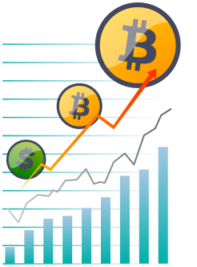
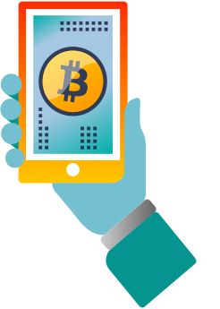
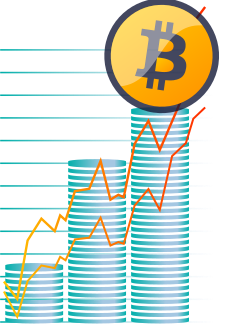
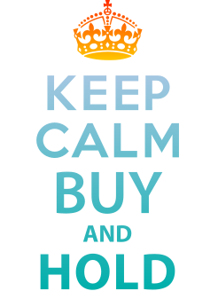
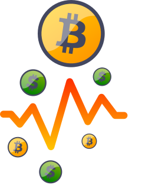
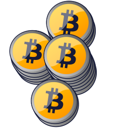
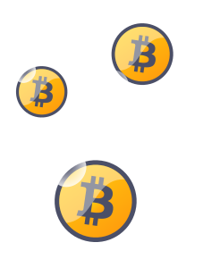

MENU

INVERTIR EN BITCOIN


CERRAR
¿Qué significa Invertir en Bitcoin?
APOSTAR AL FUTURO
A LA HORA DE INVERTIR
LOS QUE INVIRTIERON
UN CONSEJO

APOSTAR AL FUTURO
Tener o atesorar un Bitcoin significa tener una acción de un proyecto que tiene como objetivo reemplazar las reservas monetarias de los bancos centrales o convertirse en la moneda dominante para el Comercio Internacional.
No está dicho que vayan a lograrlo, pero con una pequeña porción de una torta tan grande, estas “acciones” de las que hablamos podrían valer cientos de miles de dólares en poco tiempo.
Comprar y atesorar Bitcoins es una apuesta al éxito de esta “Revolución Silenciosa del Dinero”. Tener un Bitcoin en tu Wallet (Billetera Virtual) significa ser socio de este nuevo “ecosistema digital”, que si prospera, si su uso se prolifera de manera exponencial como está previsto, terminarás arrepentido por no haber comprado más cuando tuviste la oportunidad.
No está dicho que vayan a lograrlo, pero con una pequeña porción de una torta tan grande, estas “acciones” de las que hablamos podrían valer cientos de miles de dólares en poco tiempo.
Comprar y atesorar Bitcoins es una apuesta al éxito de esta “Revolución Silenciosa del Dinero”. Tener un Bitcoin en tu Wallet (Billetera Virtual) significa ser socio de este nuevo “ecosistema digital”, que si prospera, si su uso se prolifera de manera exponencial como está previsto, terminarás arrepentido por no haber comprado más cuando tuviste la oportunidad.

A LA HORA DE INVERTIR
No hay un Precio Oficial del Bitcoin. Su precio se forma a partir de lo que los compradores estén dispuestos a pagar en ese momento.
El Bitcoin es global y no se ve nunca afectado por la situación financiera o la estabilidad política de un país o región. Es más, cada vez que hay ‘caos’ en el mundo real, el Bitcoin se ve beneficiado ya que es apolítico y se sienta fuera del control o la influencia de cualquier gobierno, no importa cuán poderoso sea. Cuando se piensa en ‘como la política y la economía puede afectar al precio del Bitcoin’, hay que hacerlo a escala global, no hay que guiarse por lo que esté pasando en un determinado país.
Tanto Bitcoin como Ethereum son, como vehículo de inversión, las Cryptomonedas que presentan el mejor ratio de rentabilidad/riesgo.
El Bitcoin es global y no se ve nunca afectado por la situación financiera o la estabilidad política de un país o región. Es más, cada vez que hay ‘caos’ en el mundo real, el Bitcoin se ve beneficiado ya que es apolítico y se sienta fuera del control o la influencia de cualquier gobierno, no importa cuán poderoso sea. Cuando se piensa en ‘como la política y la economía puede afectar al precio del Bitcoin’, hay que hacerlo a escala global, no hay que guiarse por lo que esté pasando en un determinado país.
Tanto Bitcoin como Ethereum son, como vehículo de inversión, las Cryptomonedas que presentan el mejor ratio de rentabilidad/riesgo.

LOS QUE INVIRTIERON
Desde su creación, los inversores en Bitcoin y Ethereum han sido ridículamente exitosos. El crecimiento durante el año 2017 fue estelar, alcanzando retornos que fueron desde los 1,500% a los 15,000%. El precio del Bitcoin voló de USD450 en mayo de 2016 hasta superar los USD19,000 por unidad en diciembre de 2017. Esta escalada generó una euforia tal a nivel mundial que posicionaron al Bitcoin y a otras Cryptomonedas como un activo de ensueño por invertir. A inicios de 2018, luego de una fuerte corrección en los niveles de precios, se espera que los niveles actuales atraigan a nuevos inversores para mantener la tendencia alcista previa al fin del último año. A través de su historia, el Bitcoin ha incrementado su valor de modo rápido y constante, seguido por una y firme caída para luego volver a estabilizarse.
Recomendamos sitios como ‘Bitcoin Wisdom’ o ‘Cryptowatch’ para analizar, en un entorno grafico muy amigable, y entender el precio histórico del Bitcoin.
Recomendamos sitios como ‘Bitcoin Wisdom’ o ‘Cryptowatch’ para analizar, en un entorno grafico muy amigable, y entender el precio histórico del Bitcoin.
UN CONSEJO
Como dijo recientemente una eminencia de la Industria: “Yo siempre le digo a mi familia que, la segunda estupidez más grande que pueden cometer es poseer más Bitcoins de los que se puedan dar el lujo de perder, pero la estupidez mas gran de todas -por lejos- es no tener ni uno”.
CERRAR


¿Qué significa ‘holdear’ Bitcoins?
No se trata de invertir o no en Bitcoin, sino de como invertir. Buy & Hold (Comprar y mantener) es una expresión conocida en el mundo bursátil y la forma más común de invertir en Bitcoin.
Significa comprar el Bitcoin esperando que se incremente su valor (de ahí viene el término “Holdear” un Bitcoin). Si este es su objetivo, no es tan importante el momento que se decida a comprar por que se apuesta a que el precio continuará a subir.
Significa comprar el Bitcoin esperando que se incremente su valor (de ahí viene el término “Holdear” un Bitcoin). Si este es su objetivo, no es tan importante el momento que se decida a comprar por que se apuesta a que el precio continuará a subir.
CERRAR
¿Cuándo es buen momento para comprar?
EL ARTE DEL TRADING
TEMPLE Y PACIENCIA
UN CONSEJO

EL ARTE DEL TRADING
El arte del trading es decidir en qué momento un activo financiero está en una burbuja y cuando “tocó fondo” después de una caída abrupta. Por eso la pregunta del título no puede ser respondida con total seguridad. En Bitcoin, particularmente, lo que hoy parece una pregunta difícil, en retrospectiva es muy fácil de responder.
A veces el precio de una cryptomoneda aumenta, y todo el mundo piensa que ha llegado al pico de la burbuja, y en realidad apenas estaba empezando. Por ejemplo, mucha gente no compró Bitcoins cuando estaban a USD1,000 porque en ese momento les parecía excesivamente caros. Pero algunos meses más tarde esos precios terminaron demostrando ser el punto de partida de una tendencia alcista nunca vista en ningún otro vehículo de inversión.
A veces el precio de una cryptomoneda aumenta, y todo el mundo piensa que ha llegado al pico de la burbuja, y en realidad apenas estaba empezando. Por ejemplo, mucha gente no compró Bitcoins cuando estaban a USD1,000 porque en ese momento les parecía excesivamente caros. Pero algunos meses más tarde esos precios terminaron demostrando ser el punto de partida de una tendencia alcista nunca vista en ningún otro vehículo de inversión.
TEMPLE Y PACIENCIA
Cuando uno invierte en Bitcoin las reacciones requeridas son muchas veces contra-intuitivas, por eso al inversor paciente le ira siempre mejor que al inversor impulsivo. No hay que apresurarse a comprar luego de una fuerte baja por que puede ser que venga otra, y no hay que ser impetuoso a la hora de comprar por un palpito que mañana va a explotar, porque puede suceder exactamente lo contrario. Por eso el inversor paciente, el que se toma el tiempo para mirar, el que se informa, el que analiza, es el que hoy está ganando mucho dinero con sus Bitcoins.
Pero no solo se debe tener en cuenta el momento justo para “entrar”, la clave, la decisión más importante está en cuando “salir”. Siempre recomendamos a nuestros clientes que, ante las oscilaciones de mercado, antes las noticias que circulan en internet deben siempre mantenerse firmes para no tomar decisiones apresuradas.
Pero no solo se debe tener en cuenta el momento justo para “entrar”, la clave, la decisión más importante está en cuando “salir”. Siempre recomendamos a nuestros clientes que, ante las oscilaciones de mercado, antes las noticias que circulan en internet deben siempre mantenerse firmes para no tomar decisiones apresuradas.

UN CONSEJO
Para invertir en Bitcoins: No vacilar, no ser débil ante las fluctuaciones de mercado, dicho en otras palabras: NO VENDER DEMASIADO RAPIDO. Mantener la posición ante un mercado extremadamente volátil cuando uno se encuentra considerablemente expuesto requiere temple de acero. Por eso decimos que el Bitcoin no es una inversión para cualquiera.
En conclusión, encontrar el momento justo para invertir en Bitcoins requiere mucho análisis y depende de las necesidades y expectativas de cada uno. Por eso recomendamos a nuestros clientes que tengan siempre una perspectiva a largo plazo para reducir el riesgo de volatilidad y eventuales perdidas.
En conclusión, encontrar el momento justo para invertir en Bitcoins requiere mucho análisis y depende de las necesidades y expectativas de cada uno. Por eso recomendamos a nuestros clientes que tengan siempre una perspectiva a largo plazo para reducir el riesgo de volatilidad y eventuales perdidas.
CERRAR

¿El Bitcoin es una burbuja especulativa?
No se puede comparar una crypto-burbuja con las burbujas financieras tradicionales. En Crypto, 10% arriba no es una burbuja, puede ser perfectamente volatilidad diaria. 100% arriba si, puede ser una burbuja, pero usualmente es solo el inicio en la tendencia alcista. 1000% arriba, seguramente, es una burbuja, pero no hay garantía que realmente vaya a explotar.
En realidad, la pregunta debería ser: ¿Se puede confiar en un activo que tuvo un despegue vertical increíble como lo tuvo el Bitcoin?
La respuesta es: SEGURO, hubiera sido mejor invertir un año atrás, o dos o seis. Pero si uno cree en el potencial de esta tecnología, si creemos en la visión del dinero que propone Bitcoin, hoy podría ser el mejor día para empezar a invertir.
En realidad, la pregunta debería ser: ¿Se puede confiar en un activo que tuvo un despegue vertical increíble como lo tuvo el Bitcoin?
La respuesta es: SEGURO, hubiera sido mejor invertir un año atrás, o dos o seis. Pero si uno cree en el potencial de esta tecnología, si creemos en la visión del dinero que propone Bitcoin, hoy podría ser el mejor día para empezar a invertir.
CERRAR
¿Me conviene Invertir en Bitcoin?
La respuesta a, si debe invertir o no, depende de cuanto cree usted en esta nueva tecnología, en la necesidad de una alternativa al sistema actual monopolizado por los bancos. Es usted quien debe preguntarse cuanto cree realmente que bitcoin se convertirá a largo plazo en un depósito de valor confiable o terminará casi en el olvido como una buena idea que no pudo ser.
Pero piénselo de esta manera, si el sueño se vuelve realidad, y Bitcoin se convierte a largo plazo en un depósito de valor confiable, su precio de venta oscilará los USD2,000,000 por unidad (dependiendo de cuantos Bitcoins se pierden y estén en efectivamente en circulación en ese momento).
Si, en cambio, el Bitcoin no llegase a convertirse en un depósito de valor confiable, es muy probable que su precio tienda a cero.
Pero, pensando en un futuro posible y sin irnos a los extremos, si usted piensa que Bitcoin tiene por lo menos un 10% de probabilidad de convertirse en un depósito de valor confiable, si solo el 10% del sueño se cumple, Bitcoin es una excelente inversión con un retorno muy difícil de igualar por otras alternativas de inversión.
Si bien Bitcoin es considerado como un activo de inversión de alto riesgo, no hay hoy en día inversor profesional que no esté invirtiendo -al menos una pequeña porción de su portfolio- en Bitcoin, Ethereum y otras Cryptomonedas.
Pero piénselo de esta manera, si el sueño se vuelve realidad, y Bitcoin se convierte a largo plazo en un depósito de valor confiable, su precio de venta oscilará los USD2,000,000 por unidad (dependiendo de cuantos Bitcoins se pierden y estén en efectivamente en circulación en ese momento).
Si, en cambio, el Bitcoin no llegase a convertirse en un depósito de valor confiable, es muy probable que su precio tienda a cero.
Pero, pensando en un futuro posible y sin irnos a los extremos, si usted piensa que Bitcoin tiene por lo menos un 10% de probabilidad de convertirse en un depósito de valor confiable, si solo el 10% del sueño se cumple, Bitcoin es una excelente inversión con un retorno muy difícil de igualar por otras alternativas de inversión.
Si bien Bitcoin es considerado como un activo de inversión de alto riesgo, no hay hoy en día inversor profesional que no esté invirtiendo -al menos una pequeña porción de su portfolio- en Bitcoin, Ethereum y otras Cryptomonedas.
CERRAR
¿Cómo hago para Invertir en Bitcoin?
Visítenos en Recoleta, conozca a su crypto-asesor y éste le presentará todas las alternativas, opciones y modalidades disponibles para invertir en Bitcoins, Ethereum y otras Cryptomonedas.
En su primer visita le crearemos un Perfil Operacional que le permitirá transaccionar con todos nuestros productos y herramientas disponibles.
Una vez que se le ha dado de alta como cliente, se le otorgará un PIN Transaccional y una Clave personal, que serán necesarios para realizar cualquier operación de compra, venta o arbitraje.
Con su PIN y Clave personal, usted podrá emitir libremente ORDENES DE VENTA, ORDENES DE COMPRA y ORDENES DE PAGO que serán liquidadas al momento, ya sea en efectivo, mediante transferencia vía CBU a su cuenta bancaria o -si son Cryptomonedas- en Wallet (Billetera Virtual) que usted elija.
En su primer visita le crearemos un Perfil Operacional que le permitirá transaccionar con todos nuestros productos y herramientas disponibles.
Una vez que se le ha dado de alta como cliente, se le otorgará un PIN Transaccional y una Clave personal, que serán necesarios para realizar cualquier operación de compra, venta o arbitraje.
Con su PIN y Clave personal, usted podrá emitir libremente ORDENES DE VENTA, ORDENES DE COMPRA y ORDENES DE PAGO que serán liquidadas al momento, ya sea en efectivo, mediante transferencia vía CBU a su cuenta bancaria o -si son Cryptomonedas- en Wallet (Billetera Virtual) que usted elija.
UNDER LICENSE GRANTED BY AMERICAN EXCHANGE FINANCIAL SERVICES LLC.
© 2018 - ALL RIGHTS RESERVED
© 2018 - ALL RIGHTS RESERVED